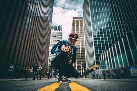

Unlocking Creativity Through the Lens: The Art of Photography
Introduction
Photography is a mesmerizing art form that allows us to capture the essence of a moment and freeze it in time. It has the power to evoke emotions, tell stories, and ignite our imagination. From breathtaking landscapes to candid portraits, photography has the ability to convey a unique perspective and create a lasting impact. In this blog, we will delve into the captivating world of photography, exploring its various genres, techniques, and the creative process behind it.
The Language of Light
At the core of photography lies the mastery of light. Understanding how light interacts with the subject can transform an ordinary scene into an extraordinary masterpiece. Photographers play with natural and artificial light sources, experiment with shadows and highlights, and manipulate exposure settings to create the desired mood and atmosphere. Whether it's the warm glow of a sunrise or the dramatic interplay of shadows, light is the key element that sets the stage for a compelling photograph.


Genres of Photography
Photography encompasses a multitude of genres, each with its own distinct characteristics and requirements. From landscape and wildlife photography to portraiture and street photography, there is a niche for every aspiring photographer to explore. Understanding the nuances of different genres allows photographers to specialize in their preferred style while expanding their artistic horizons.
Composition and Framing
Composition is the art of arranging elements within the frame to create a visually appealing and balanced photograph. It involves considering factors such as the rule of thirds, leading lines, symmetry, and perspective. By thoughtfully composing the image, photographers can guide the viewer's gaze, emphasize key elements, and evoke specific emotions. Framing, on the other hand, involves selecting the right lens, perspective, and cropping to enhance the overall impact of the photograph

The Creative Process
Photography is not just about technical skills; it is an art form that requires creativity and vision. The process begins with observing the world around us, finding inspiration in the ordinary, and seeking out unique perspectives. Planning the shoot, envisioning the final result, and executing the concept are all part of the creative journey. Experimentation, trial and error, and learning from both successes and failures are crucial aspects of the photographer's growth and development.
Post-Processing and Editing
In the digital age, post-processing and editing have become integral parts of photography. Software tools such as Adobe Lightroom and Photoshop allow photographers to enhance colors, adjust exposure, crop, and retouch images. While editing should be used judiciously to maintain the integrity of the original photograph, it also provides a platform for artistic expression and the ability to add a personal touch.

Sharing and Feedback
Photography is meant to be shared and appreciated. In today's interconnected world, social media platforms have become a hub for photographers to showcase their work and connect with fellow enthusiasts. Engaging in photography communities, seeking constructive feedback, and participating in competitions can provide valuable insights, inspire new ideas, and foster growth as an artist.
Conclusion
Photography is an art that transcends boundaries, allowing us to capture fleeting moments, convey stories, and express our creativity. Through the interplay of light, composition, and personal vision, photographers can create powerful images that evoke emotions and leave a lasting impact on viewers. By continuously exploring new techniques, genres, and perspectives, photographers can unlock their full creative potential and embark on an exhilarating journey of self-expression.
So, grab your camera, embrace the beauty of the world, and let your unique voice be heard through the captivating art of photography.